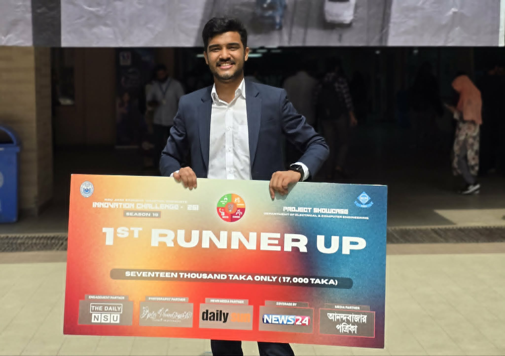
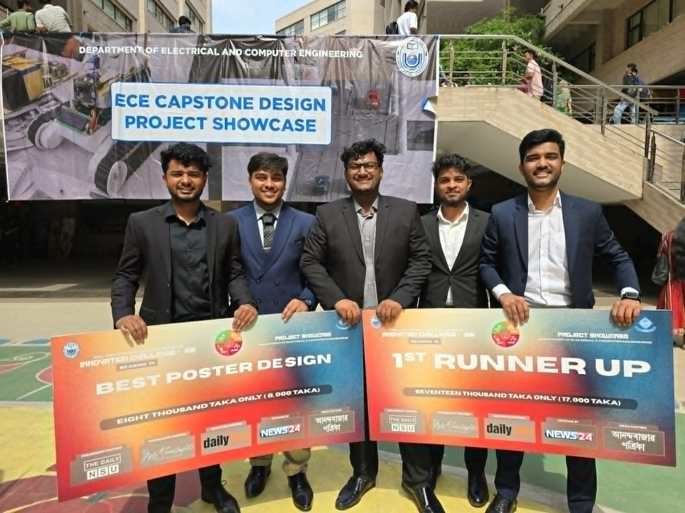

AI / ML / Data Science / Computer Vision
Building intelligent systems that connect research, data, and real-world products.
I’m Boishik Barua, a final-year Computer Science and Engineering student focused on artificial intelligence, machine learning, computer vision, NLP, and scalable web systems.
Boishik Barua
AI / ML / Data Science Aspirant
Computer Vision
NLP
PyTorch
Full-Stack
$ |
Profile
About me
I work at the intersection of AI research, machine learning engineering, data-driven problem solving, and software development. My current interests include controlled image synthesis, hallucination detection for Bangla summarization, explainable medical AI, and practical full-stack systems.
My goal is to build technically strong, research-informed solutions that remain useful in real settings.
Education timeline
2026
B.Sc. in Computer Science and Engineering
North South University, Dhaka • Expected Jun 2026
2020
Higher Secondary Certificate, Science
Notre Dame College • GPA 5.00 / 5.00
2018
Secondary School Certificate, Science
Monipur High School • GPA 5.00 / 5.00
Technical toolkit
Skills aligned with AI, ML, and data science
Languages
PythonCC++JavaJavaScriptSQL
AI / ML
PyTorchTensorFlowKerasScikit-learnXGBoostCNNsViTsGrad-CAM
Core Domains
Computer VisionNLPKnowledge DistillationFeature
EngineeringModel Evaluation
Web & Tools
HTMLCSSNode.jsExpress.jsMySQLGitGitHubJupyterColab
Selected work
Projects and research focus
Forensic Text-to-Face Suspect Generation
Developing an AI system that converts witness text descriptions into suspect-like facial images using Stable Diffusion, ControlNet-style conditioning, and hierarchical geometry cues.
Generative AIComputer
VisionDiffusionConditioning
Bangla Hallucination Benchmark
Benchmarking hallucination detection in Bangla summarization with multilingual encoders, BanglaBERT, XLM-R, and LLM-based baselines.
NLPBangla AIEvaluation
Hybrid Feature-Fusion Dental X-ray Classifier
Built a medical image classification pipeline using ConvNeXt, Swin Transformer, ResNet34, knowledge distillation, and Grad-CAM interpretability.
Medical AIExplainabilityVision Transformers
Baggy — Multi-Role E-Commerce Platform
Designed a complete e-commerce workflow with customer, seller, and support roles, including stock, carts, wishlists, vouchers, orders, and payment status logic.
Node.jsExpress.jsMySQL
BanglarKrishok Expert System
Built a rule-based agricultural recommendation website and contributed as second team lead on system design, UI mockups, and UML documentation.
Expert SystemUMLBackendSolid
Principles
Movie Recommender System
Developed an interactive recommendation system with title and genre search, plus a personalized watchlist feature.
RecommendationsInteractive UIData
Recognition
Awards, training, and achievements
GCL World — AI and Data Science Training Program
Matsuo Iwasawa Lab, University of Tokyo, Japan • Apr 2026 – Jul 2026
Intensive training in practical and theoretical AI, machine learning, and data science.
1st Runner-Up — Innovation Challenge Season 19
North South University
Recognized for “Face Reconstruction using Hierarchical Geometry Conditioning from Witness Description” and Best Poster Design.
Intra NSU Junior Programming Contest
Ranked 7th and achieved the second-highest number of solved problems.
Achievement gallery
University awards and milestones





Let’s connect
Open to AI/ML, data science, and research-oriented opportunities.
Based in Dhaka, Bangladesh. Available for research collaboration, internships, graduate opportunities, and technically demanding AI/ML work.